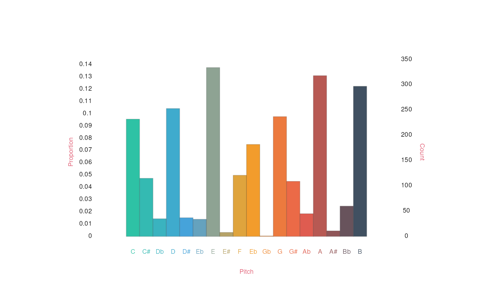
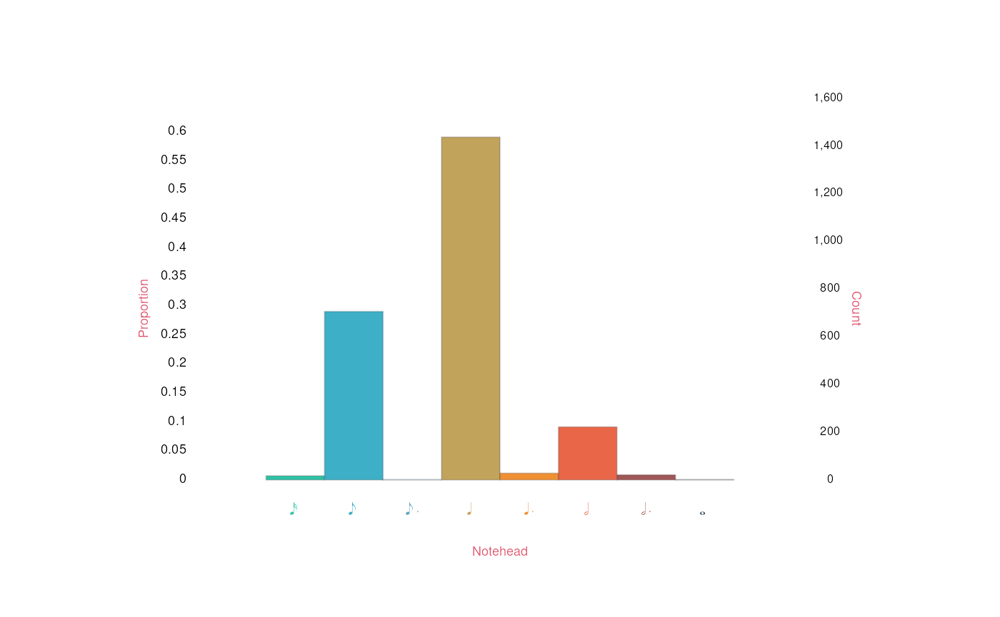

Getting started with humdrumR
Nathaniel Condit-Schultz
2026-07-30
GettingStarted.RmdWelcome to “Getting started with
humdrum”!
This article provides a quick introduction to the basics of
humdrum,
getting you started loading humdrum data and performing (very) simple
analyses of humdrum data. Before you continue, make sure
humdrum
is installed: how to install humdrumR.
Once it’s installed, you can open an R session and load the library
using the command library(humdrumR)—now you are ready to
rock!
This article, like all of our articles, closely parallels information
in
humdrum’s
detailed code documentation, which can be found in the “Reference” section of the
humdrumhomepage. Once
humdrum
is installed and loaded, the code documentation can also be accessed
directly within an R session by using the ? command, like
?humdrumR, Anywhere in one of our articles where you see a
named variable followed by parentheses, like kern() or
recip(), you can call ?kern or
?recip to see the corresponding documentation.
Quick Start
Let’s just dive right in!
To illustrate how
humdrum
works, we’ll need some humdrum data to work with. Fortunately,
humdrum
comes packaged with a small number of humdrum data files just for you to
play around with. These files are stored in the directory where your
computer installed
humdrum,
in a subdirectory called “HumdrumData”. You can move your R
session to this directory using R’s “set working directory” command:
setwd(humdrumRroot). Once you’re in the humdrumR directory,
you can use the base R dir function to see what humdrum
data is available to you.
library(humdrumR)
setwd(humdrumRroot)
dir('HumdrumData')
> [1] "BachChorales" "BeethovenVariations" "InvalidFile.krn"
> [4] "MozartVariations" "RapFlow" "RollingStoneCorpus"It looks like there are six directories of humdrum data available to
you. Using dir again, we can look inside one: let’s start
with the “BachChorales” directory.
dir('HumdrumData/BachChorales')
> [1] "chor001.krn" "chor002.krn" "chor003.krn" "chor004.krn" "chor005.krn"
> [6] "chor006.krn" "chor007.krn" "chor008.krn" "chor009.krn" "chor010.krn"There are ten files in the directory, named
“chor001.krn”, “chor002.krn”, etc. These are
humdrum plain-text files, representing ten chorales by J.S. Bach; each
file contains four spines (columns) of **kern data,
representing musical pitch and rhythm (among other things). Take a
minute to find the files in your computer’s finder/explorer and open
them up with a simple text editor. One of the core philosophies of
humdrum
is that we maintain a direct, transparent relationship with our symbolic
data—so always take the time to look at your data! You can also do this
within Rstudio’s “Files” pane—in fact, Rstudio will make things extra
easy for you because you can (within the Files pane) click “More” >
“Go To Working Directory” to quickly find the files.
Reading humdrum data
Now that we’ve found some humdrum data to look at, let’s read it into
humdrum.
We can do this using
humdrum’s
readHumdrum() command. Try this:
readHumdrum('HumdrumData/BachChorales/chor001.krn') -> chor1This command does two things:
- The
readHumdrum()function will read the “chor001.krn” file into R and create a humdrum data object from it. - This new object will be saved to a variable called
chor1. (The name ‘chor1’ is just a name I chose—you are welcome to give it a different name if you want.)
Once we’ve created our chor1 object (or whatever you
chose to call it), we can take a quick look at what it is by just typing
its name on the command line and pressing enter:
chor1
> ######################## vvv chor001.krn vvv #########################
> 1: !!!COM: Bach, Johann Sebastian
> 2: !!!CDT: 1685/02/21/-1750/07/28/
> 3: !!!OTL@@DE: Aus meines Herzens Grunde
> 4: !!!OTL@EN: From the Depths of My Heart
> 5: !!!SCT: BWV 269
> 6: !!!PC#: 1
> 7: !!!AGN: chorale
> 8: **kern **kern **kern **kern
> 9: *ICvox *ICvox *ICvox *ICvox
> 10: *Ibass *Itenor *Ialto *Isoprn
> 11: *I"Bass *I"Tenor *I"Alto *I"Soprano
> 12: *>[A,A,B] *>[A,A,B] *>[A,A,B] *>[A,A,B]
> 13: *>norep[A,B] *>norep[A,B] *>norep[A,B] *>norep[A,B]
> 14: *>A *>A *>A *>A
> 15: *clefF4 *clefGv2 *clefG2 *clefG2
> 16: *k[f#] *k[f#] *k[f#] *k[f#]
> 17: *G: *G: *G: *G:
> 18: *M3/4 *M3/4 *M3/4 *M3/4
> 19: *MM100 *MM100 *MM100 *MM100
> 20: 4GG 4B 4d 4g
> 21: =1 =1 =1 =1
> 22: 4G 4B 4d 2g
> 23: 4E 8cL 4e .
> 24: . 8BJ . .
> 25: 4F# 4A 4d 4dd
> 26: =2 =2 =2 =2
> 27: 4G 4G 2d 4.b
> 28: 4D 4F# . .
> 29: . . . 8a
> 30: 4E 4G 4B 4g
> 31: =3 =3 =3 =3
> 32: 4C 8cL 8eL 4.g
> 33: . 8BJ 8d .
> 34: 8BBL 4c 8e .
> 35: 8AAJ . 8f#J 8a
> 36: 4GG 4d 4g 4b
> 37: =4 =4 =4 =4
> 38: 2D; 2d; 2f#; 2a;
> 39: 4GG 4d 4g 4b
> 40: =5 =5 =5 =5
> 41: 4FF# 4A 4d 2dd
> 42: 4GG 4B 4e .
> 43: 4AA 4c 4f# 4cc
> 44: =6 =6 =6 =6
> 45: 4BB 4d 2g 4b
> 46: 4C 4e . 2a
> 47: 4D 8dL 4f# .
> 48: . 8cJ . .
> 49: =7 =7 =7 =7
> 50: 2GG; 2B; 2d; 2g;
> 51: =:|! =:|! =:|! =:|!
> 52: *>B *>B *>B *>B
> 53: 4GG 4d [4g 4b
> 54: =8 =8 =8 =8
> 55: 4GG 4d 8gL] 4b
> 56: . . 8f#J .
> 57: 4AA 4c 8eL 4cc
> 58: . . 8f#J .
> 59: 4BB 8BL [4g 4dd
> 60: . 8AJ . .
> 61: =9 =9 =9 =9
> 62: 4.BB 8BL 8gL] 4.dd
> 63: . 8cJ 8aJ .
> 64: . 4d 8gL .
> 65: 8AA . 8f#J 8cc
> 66: 4GG 4d 4g 4b
> 67: =10 =10 =10 =10
> 68: 2D; 2d; 2f#; 2a;
> 69: [4E 4B 4e 4g
> 70: =11 =11 =11 =11
> 71: 4E] 4G 4e 2b
> 72: 4D 4B 8f#L .
> 73: . . 8gJ .
> 74: 4C 4e 4a 4cc
> 75: =12 =12 =12 =12
> 76: 4.BB 2d 4a 2dd
> 77: . . 4.g .
> 78: 8C . . .
> 79: 4D 4d . 4cc
> 80: . . 8f# .
> 81: =13 =13 =13 =13
> 82: 8GGL 2.d 2g 2.b
> 83: 8AAJ . . .
> 84: 4BB . . .
> 85: 4GG . 4f .
> 86: =14 =14 =14 =14
> 87: 2C; 2c; 2e; 2g;
> 88: 4GG 4d 4g 4b
> 89: =15 =15 =15 =15
> 90: 4FF# 8dL 4.a 2dd
> 91: . 8cJ . .
> 92: 4GG 4B . .
> 93: . . 8g .
> 94: 4AA 4c 4f# 4cc
> 95: =16 =16 =16 =16
> 96: 4BB 2d 2g 2b
> 97: 4GG . . .
> 98: 4D 8dL [4f# 4a
> 99: . 8cJ . .
> 100: =17 =17 =17 =17
> 101: 8EL 4B 8f#L] 4.g
> 102: 8D . 8eJ .
> 103: 8C 4c 8eL .
> 104: 8BB . 8f#J 8a
> 105: 8AA 4d 4g 4b
> 106: 8GGJ . . .
> 107: =18 =18 =18 =18
> 108: 2D; 2d; 2f#; 2a;
> 109: [4G 4d 4g 4b
> 110: =19 =19 =19 =19
> 111: 4G] 2d 2a 2dd
> 112: 4F# . . .
> 113: [4E 4e 8gL 4cc
> 114: . . 8f#J .
> 115: =20 =20 =20 =20
> 116: 8EL] 2e 2g 4b
> 117: 8DJ . . .
> 118: 4C . . 2a
> 119: 4D 8dL 4f# .
> 120: . 8cJ . .
> 121: =21 =21 =21 =21
> 122: 2.GG; 2.B; 2.d; 2.g;
> 123: == == == ==
> 124: *- *- *- *-
> 125: !!!hum2abc: -Q ''
> 126: !!!title: @{PC#}. @{OTL@@DE}
> 127: !!!YOR1: 371 vierstimmige Choralgesänge von Johann Sebastian ***
> 128: !!!YOR2: 4th ed. by Alfred Dörffel (Leipzig: Breitkopf und H&***
> 129: !!!YOR3: c.1875). 178 pp. Plate "V.A.10". reprint: J.S. Bach, 371***
> 130: !!!YOR4: Chorales (New York: Associated Music Publishers, Inc., c.***
> 131: !!!SMS: B&H, 4th ed, Alfred Dörffel, c.1875, plate V.A.10
> 132: !!!EED: Craig Stuart Sapp
> 133: !!!EEV: 2009/05/22
> ######################## ^^^ chor001.krn ^^^ #########################
> (***four global comments truncated due to screen size***)
>
> Data fields:
> *Token :: character(In R, when you enter something on the command line, R “prints” it out for you to read.) The print-out you see shows you the name of the file, the contents of the file, and some stuff about “Data fields” that you will learn about in our next article.
Cool! Still, looking at a single humdrum file is not really that exciting. The whole point of using computers is that they allow us to work with large amounts of data. Luckily, humdrum makes this very easy. Check out this next command:
readHumdrum('HumdrumData/BachChorales/chor0') -> choralesInstead of writing 'chor001.krn', I wrote
'chor0'. When we feed the string 'chor0' to
readHumdrum(), it won’t just look for a file called
“chor0”; it will read any file in that directory
whose name contains the sub-string "chor0"—which
in this case is all ten files! Try printing the new
chorales object to see how it is different:
chorales
> ######################## vvv chor001.krn vvv #########################
> 1: !!!COM: Bach, Johann Sebastian
> 2: !!!CDT: 1685/02/21/-1750/07/28/
> 3: !!!OTL@@DE: Aus meines Herzens Grunde
> 4: !!!OTL@EN: From the Depths of My Heart
> 5: !!!SCT: BWV 269
> 6: !!!PC#: 1
> 7: !!!AGN: chorale
> 8: **kern **kern **kern **kern
> 9: *ICvox *ICvox *ICvox *ICvox
> 10: *Ibass *Itenor *Ialto *Isoprn
> 11: *I"Bass *I"Tenor *I"Alto *I"Soprano
> 12: *>[A,A,B] *>[A,A,B] *>[A,A,B] *>[A,A,B]
> 13: *>norep[A,B] *>norep[A,B] *>norep[A,B] *>norep[A,B]
> 14: *>A *>A *>A *>A
> 15: *clefF4 *clefGv2 *clefG2 *clefG2
> 16: *k[f#] *k[f#] *k[f#] *k[f#]
> 17: *G: *G: *G: *G:
> 18: *M3/4 *M3/4 *M3/4 *M3/4
> 19: *MM100 *MM100 *MM100 *MM100
> 20: 4GG 4B 4d 4g
> 21: =1 =1 =1 =1
> 22: 4G 4B 4d 2g
> 23: 4E 8cL 4e .
> 24: . 8BJ . .
> 25: 4F# 4A 4d 4dd
> 26: =2 =2 =2 =2
> 27: 4G 4G 2d 4.b
> 28: 4D 4F# . .
> 29: . . . 8a
> 30: 4E 4G 4B 4g
> 31-133::::::::::::::::::::::::::::::::::::::::::::::::::::::::::::::::
> ######################## ^^^ chor001.krn ^^^ #########################
>
> (eight more pieces...)
>
> ######################## vvv chor010.krn vvv #########################
> 1-70::::::::::::::::::::::::::::::::::::::::::::::::::::::::::::::::
> 71: 4D 8F# 4d 4b
> 72: . 4G . .
> 73: 4D . 4c 4a
> 74: . 8F# . .
> 75: 2GG; 2G; 2B; 2g;
> 76: =11 =11 =11 =11
> 77: 2C 2G 2e 2g
> 78: 4AA 4A 4e 4cc
> 79: 4E 4G# 8eL 4b
> 80: . . 8dJ .
> 81: =12 =12 =12 =12
> 82: 4F 4A 4c 4a
> 83: 4C 4G 4c 4e
> 84: 4BB- 4G [2d 4g
> 85: 4AA 4A . 4f
> 86: =13 =13 =13 =13
> 87: 4GG# 4B 4d] 1e;
> 88: 4AA 4A 4c .
> 89: 2EE; 2G#X; 2B; .
> 90: == == == ==
> 91: *- *- *- *-
> 92: !!!hum2abc: -Q ''
> 93: !!!title: @{PC#}. @{OTL@@DE}
> 94: !!!YOR1: 371 vierstimmige Choralgesänge von Johann Sebastian B***
> 95: !!!YOR2: 4th ed. by Alfred Dörffel (Leipzig: Breitkopf und H&a***
> 96: !!!YOR2: c.1875). 178 pp. Plate "V.A.10". reprint: J.S. Bach, 371 ***
> 97: !!!YOR4: Chorales (New York: Associated Music Publishers, Inc., c.1***
> 98: !!!SMS: B&H, 4th ed, Alfred Dörffel, c.1875, plate V.A.10
> 99: !!!EED: Craig Stuart Sapp
> 100: !!!EEV: 2009/05/22
> ######################## ^^^ chor010.krn ^^^ #########################
> (***four global comments truncated due to screen size***)
>
> humdrumR corpus of ten pieces.
>
> Data fields:
> *Token :: characterWow! We’ve now got a “humdrumR corpus of ten pieces”—and that’s
nothing: readHumdrum() will work just as well reading
hundreds or thousands of files! Notice that when you print a
humdrum
object,
humdrum
shows you the beginning of the first file and the end of the last file,
as well as telling you how many files there are in total.
readHumdrum()has a number of other cool options which you can read about in more detail in our humdrumR read/write tutorial.
Counting Things
Once we have some data loaded, the next thing a good computational
musicologist does is start counting! To count the contents of data, we
can use the count() function.
chorales |>
count() > humdrumR count distribution
> Token n
> [2d 1
> [2e 1
> [4a 1
> [4A 2
> [4B 1
> [4c 1
> [4d 1
> [4e 2
> [4E 2
> [4f 1
> [4f# 1
> [4g 4
> [4G 2
> [8cJ 1
> [8CJ 1
> [8gJ 1
> 16AL 1
> 16B-Jk 1
> 16b-XJJ 1
> 16BBJJ 1
> 16BJJ 1
> 16C#L 1
> 16c#LL 1
> 16ccL 1
> 16ccLL 1
> 16d#JJ 1
> 16ddJJ 1
> 16dJJ 2
> 16EJJ 1
> 16eL 2
> 16F#L 1
> 1e; 1
> 2.a; 1
> 2.A; 1
> 2.AA; 1
> 2.b 1
> 2.b; 1
> 2.B; 1
> 2.BB; 1
> 2.c; 1
> 2.C# 1
> 2.c#; 1
> 2.d 1
> 2.d; 2
> 2.e 1
> 2.e; 1
> 2.ee 1
> 2.f; 1
> 2.f#; 1
> 2.FF; 1
> 2.g; 1
> 2.GG; 1
> 2a 17
> 2A 10
> 2a-; 1
> 2A-; 2
> 2a; 9
> 2A; 2
> 2AA-; 1
> 2AA; 4
> 2b 10
> 2B 2
> 2b-; 1
> 2b; 3
> 2B; 8
> 2BB 2
> 2BB-; 1
> 2BB; 1
> 2c 1
> 2C 1
> 2c; 6
> 2C; 1
> 2c# 5
> 2c#; 3
> 2cc 3
> 2cc# 3
> 2cc#; 1
> 2d 6
> 2D 5
> 2d-; 1
> 2d; 6
> 2D; 5
> 2d# 1
> 2D# 1
> 2d#; 1
> 2dd 8
> 2DnX 1
> 2e 13
> 2E 4
> 2e-; 1
> 2e; 9
> 2E; 5
> 2E# 1
> 2EE; 1
> 2f; 4
> 2f# 10
> 2F# 4
> 2f#; 5
> 2F#; 1
> 2FF; 3
> 2FF#; 1
> 2g 7
> 2G 1
> 2g; 3
> 2G; 1
> 2g# 4
> 2G# 1
> 2g#; 1
> 2G#; 4
> 2G#X; 1
> 2GG; 2
> 4.a 2
> 4.a- 1
> 4.b 2
> 4.B 3
> 4.b- 2
> 4.BB 2
> 4.c 1
> 4.cc# 1
> 4.d 1
> 4.dd 1
> 4.e 1
> 4.e- 1
> 4.ee 1
> 4.f 3
> 4.f# 1
> 4.g 5
> 4a 90
> 4A 58
> 4a- 15
> 4A- 4
> 4a-; 2
> 4A-; 2
> 4a-X 1
> 4a; 8
> 4A; 3
> 4a# 4
> 4A# 2
> 4AA 20
> 4AA- 2
> 4AA-; 1
> 4AA; 5
> 4AA# 1
> 4anX 1
> 4b 81
> 4B 56
> 4b- 16
> 4B- 10
> 4B-X 1
> 4b; 9
> 4B; 9
> 4B] 1
> 4BB 25
> 4BB- 7
> 4BB; 3
> 4c 49
> 4C 23
> 4c; 8
> 4C; 2
> 4c] 1
> 4c# 27
> 4C# 19
> 4c#; 2
> 4C#; 1
> 4cc 48
> 4cc; 3
> 4cc# 28
> 4ccnX 1
> 4CnX 1
> 4d 53
> 4D 30
> 4d- 9
> 4D- 4
> 4d; 8
> 4D; 4
> 4d] 1
> 4d# 9
> 4D# 8
> 4d#; 3
> 4dd 29
> 4DD 1
> 4dd- 7
> 4dd; 2
> 4dd# 3
> 4dnX 2
> 4DnX 1
> 4e 103
> 4E 43
> 4e- 7
> 4E- 6
> 4e-; 2
> 4e; 14
> 4E; 7
> 4e] 1
> 4E] 1
> 4e# 3
> 4E# 2
> 4e#; 1
> 4E#X 1
> 4ee 20
> 4EE 2
> 4ee- 3
> 4ee-X 1
> 4ee; 1
> 4EE; 2
> 4enX 1
> 4EnX 1
> 4f 50
> 4F 12
> 4f; 2
> 4F; 2
> 4f# 47
> 4F# 30
> 4f#; 4
> 4F#; 2
> 4F#X 1
> 4F#X; 1
> 4ff 6
> 4FF 3
> 4ff; 1
> 4FF; 1
> 4ff# 1
> 4FF# 2
> 4g 66
> 4G 33
> 4g- 1
> 4g; 8
> 4G; 3
> 4g] 2
> 4G] 1
> 4g# 34
> 4G# 21
> 4g#; 5
> 4G#; 3
> 4G#X 1
> 4G#X; 1
> 4gg 1
> 4GG 15
> 4GG; 5
> 4GG# 2
> 4gnX 1
> 4GnX 1
> 4r 2
> 4ry 2
> 8.cL 1
> 8a 5
> 8A 5
> 8a- 2
> 8A- 1
> 8a-J 2
> 8A-J 1
> 8a-L 4
> 8A-L 1
> 8a-XJ 1
> 8A# 2
> 8a#J 1
> 8A#J 1
> 8AA 3
> 8AA- 1
> 8AAJ 7
> 8AAL 4
> 8aJ 15
> 8AJ 17
> 8aL 10
> 8AL 12
> 8aL] 1
> 8AL] 2
> 8AnXL 1
> 8b 2
> 8b- 1
> 8B- 1
> 8b-J 1
> 8B-J 6
> 8b-L 2
> 8BB 3
> 8BB-J 6
> 8BB-L 3
> 8BBJ 6
> 8BBL 4
> 8bJ 11
> 8BJ 15
> 8bL 14
> 8BL 18
> 8c 1
> 8C 5
> 8C# 2
> 8c#J 3
> 8C#J 2
> 8c#L 5
> 8C#L 4
> 8c#XJ 1
> 8cc 2
> 8cc#J 2
> 8cc#L 2
> 8ccJ 7
> 8ccL 7
> 8cJ 15
> 8CJ 8
> 8cL 14
> 8CL 14
> 8cL] 1
> 8CL] 1
> 8cnXJ 1
> 8d 5
> 8D 3
> 8d- 1
> 8D- 6
> 8D-J 4
> 8D-L 2
> 8d-XJ 1
> 8d#J 5
> 8D#J 1
> 8d#L 1
> 8D#L 2
> 8dd 1
> 8dd#J 1
> 8ddJ 2
> 8ddL 4
> 8dJ 19
> 8DJ 15
> 8dL 24
> 8DL 6
> 8dL] 1
> 8dnJ 1
> 8e 6
> 8E 2
> 8E- 6
> 8e-J 1
> 8E-J 1
> 8e-L 1
> 8E-L 4
> 8EEJ 1
> 8eeL 2
> 8EEL 1
> 8eJ 20
> 8EJ 7
> 8eL 35
> 8EL 15
> 8eL] 2
> 8EL] 1
> 8f 3
> 8F 4
> 8f# 2
> 8F# 3
> 8f#J 26
> 8F#J 14
> 8f#L 12
> 8F#L 7
> 8f#L] 1
> 8F#XJ 1
> 8f#XL 1
> 8FF#J 2
> 8FFL 2
> 8fJ 4
> 8FJ 5
> 8fL 5
> 8FL 6
> 8fL] 1
> 8FnXL 1
> 8g 3
> 8G 4
> 8g# 4
> 8G# 4
> 8g#J 7
> 8G#J 7
> 8g#L 5
> 8G#L 3
> 8g#XJ 1
> 8GG 2
> 8GGJ 2
> 8GGL 2
> 8gJ 14
> 8GJ 8
> 8gL 14
> 8GL 17
> 8gL] 3
> 8GL] 1
> 8gnXL 2
> 8GnXL 1
> Token n
> humdrumR count distributionThat’s quite a mess! What have we done? When we pass our
chorales data to count(), it counted all the
unique data tokens (ignoring non-data tokens, like barline and
interpretations) in the data. There are a lot of unique tokens
in this data, so it’s not super helpful. Maybe we’d like to look at just
the twenty most common tokens in the chorales? To this, we
can pass the count through to two base R functions, sort()
and tail():
chorales |>
count() |>
sort() |>
head(n = 20)
> humdrumR count distribution
> Token n
> 4e 103
> 4a 90
> 4b 81
> 4g 66
> 4A 58
> 4B 56
> 4d 53
> 4f 50
> 4c 49
> 4cc 48
> 4f# 47
> 4E 43
> 8eL 35
> 4g# 34
> 4G 33
> 4D 30
> 4F# 30
> 4dd 29
> 4cc# 28
> 4c# 27
> Token n
> humdrumR count distributionAh, that’s more promising! We see that the most common token is a
quarter-note E4 (4e), which occurs 103 times.
Separating pitch and rhythm
To make our tallies more useful, we might want to count only the
pitch or rhythm part of the **kern data. To do this, we
need to to be able to extract the pitch/rhythm from the original
**kern tokens, which we can do that using
humdrum’s
suite of pitch
and rhythm
functions. For example, let’s try the pitch() function:
chorales |>
pitch()
> ######################## vvv chor001.krn vvv #########################
> 1: !!!COM: Bach, Johann Sebastian
> 2: !!!CDT: 1685/02/21/-1750/07/28/
> 3: !!!OTL@@DE: Aus meines Herzens Grunde
> 4: !!!OTL@EN: From the Depths of My Heart
> 5: !!!SCT: BWV 269
> 6: !!!PC#: 1
> 7: !!!AGN: chorale
> 8: **pitch **pitch **pitch **pitch
> 9: . . . .
> 10: . . . .
> 11: . . . .
> 12: *>[A,A,B] *>[A,A,B] *>[A,A,B] *>[A,A,B]
> 13: *>norep[A,B] *>norep[A,B] *>norep[A,B] *>norep[A,B]
> 14: *>A *>A *>A *>A
> 15: *clefF4 *clefGv2 *clefG2 *clefG2
> 16: *k[f#] *k[f#] *k[f#] *k[f#]
> 17: *G: *G: *G: *G:
> 18: . . . .
> 19: . . . .
> 20: G2 B3 D4 G4
> 21: =1 =1 =1 =1
> 22: G3 B3 D4 G4
> 23: E3 C4 E4 .
> 24: . B3 . .
> 25: F#3 A3 D4 D5
> 26: =2 =2 =2 =2
> 27: G3 G3 D4 B4
> 28: D3 F#3 . .
> 29: . . . A4
> 30: E3 G3 B3 G4
> 31-133::::::::::::::::::::::::::::::::::::::::::::::::::::::::::::::::
> ######################## ^^^ chor001.krn ^^^ #########################
>
> (eight more pieces...)
>
> ######################## vvv chor010.krn vvv #########################
> 1-70::::::::::::::::::::::::::::::::::::::::::::::::::::::::::::::::
> 71: D3 F#3 D4 B4
> 72: . G3 . .
> 73: D3 . C4 A4
> 74: . F#3 . .
> 75: G2 G3 B3 G4
> 76: =11 =11 =11 =11
> 77: C3 G3 E4 G4
> 78: A2 A3 E4 C5
> 79: E3 G#3 E4 B4
> 80: . . D4 .
> 81: =12 =12 =12 =12
> 82: F3 A3 C4 A4
> 83: C3 G3 C4 E4
> 84: Bb2 G3 D4 G4
> 85: A2 A3 . F4
> 86: =13 =13 =13 =13
> 87: G#2 B3 D4 E4
> 88: A2 A3 C4 .
> 89: E2 G#3 B3 .
> 90: == == == ==
> 91: *- *- *- *-
> 92: !!!hum2abc: -Q ''
> 93: !!!title: @{PC#}. @{OTL@@DE}
> 94: !!!YOR1: 371 vierstimmige Choralgesänge von Johann Sebastian B***
> 95: !!!YOR2: 4th ed. by Alfred Dörffel (Leipzig: Breitkopf und H&a***
> 96: !!!YOR2: c.1875). 178 pp. Plate "V.A.10". reprint: J.S. Bach, 371 ***
> 97: !!!YOR4: Chorales (New York: Associated Music Publishers, Inc., c.1***
> 98: !!!SMS: B&H, 4th ed, Alfred Dörffel, c.1875, plate V.A.10
> 99: !!!EED: Craig Stuart Sapp
> 100: !!!EEV: 2009/05/22
> ######################## ^^^ chor010.krn ^^^ #########################
> (***four global comments truncated due to screen size***)
>
> humdrumR corpus of ten pieces.
>
> Data fields:
> *Pitch :: character (**pitch tokens)
> Token :: characterThe pitch() function takes the original
**kern tokens, reads the pitch part of each token, and
translates it to scientific
pitch notation. Let’s pass that to count:
> humdrumR count distribution
> Pitch n
> C2 .
> C#2 .
> Db2 .
> D2 1
> D#2 .
> Eb2 .
> E2 7
> E#2 .
> F2 10
> F#2 5
> Gb2 .
> G2 29
> G#2 2
> Ab2 5
> A2 44
> A#2 1
> Bb2 17
> B2 48
> C3 57
> C#3 30
> Db3 16
> D3 70
> D#3 12
> Eb3 17
> E3 89
> E#3 4
> F3 30
> F#3 65
> Gb3 .
> G3 73
> G#3 46
> Ab3 11
> A3 114
> A#3 5
> Bb3 19
> B3 115
> C4 102
> C#4 48
> Db4 12
> D4 134
> D#4 21
> Eb4 13
> E4 213
> E#4 4
> F4 74
> F#4 111
> Gb4 1
> G4 134
> G#4 61
> Ab4 29
> A4 160
> A#4 5
> Bb4 24
> B4 134
> C5 73
> C#5 37
> Db5 7
> D5 48
> D#5 4
> Eb5 4
> E5 25
> E#5 .
> F5 7
> F#5 1
> Gb5 .
> G5 1
> G#5 .
> Ab5 .
> A5 .
> A#5 .
> Bb5 .
> B5 .
> Pitch n
> humdrumR count distributionPretty cool, but still quite a big table. Maybe we’d like to ignore
octave information for now? Luckily,
humdrum’s
pitch
functions have a “simple” argument, which can be used
to ask for only simple pitch information (no octave).
chorales |>
pitch(simple = TRUE) |>
count()
> humdrumR count distribution
> Pitch n
> C 232
> C# 115
> Db 35
> D 253
> D# 37
> Eb 34
> E 334
> E# 8
> F 121
> F# 182
> Gb 1
> G 237
> G# 109
> Ab 45
> A 318
> A# 11
> Bb 60
> B 297
> Pitch n
> humdrumR count distributionWe can make plot of our nice simple-pitch table, using
humdrum’s
draw() function:

Instead of pitch, we could do the same sort of counting of rhythm
information, for example, using the notehead()
function:

Filtering
Sometimes, we might only want to look at a subset of our data. For
example, maybe we only want to count notes sung by the soprano. In the
Bach chorale data we are working with, the soprano voice is always in
the fourth spine (column). We can use the filter() function
to indicate a subset we’d like to study:
chorales |>
pitch(simple = TRUE) |>
filter(Spine == 4) |>
count()
> humdrumR count distribution
> Pitch n
> C 68
> C# 37
> Db 7
> D 50
> D# 5
> Eb 4
> E 42
> F 18
> F# 14
> G 43
> G# 15
> Ab 15
> A 93
> A# 2
> Bb 15
> B 115
> Pitch n
> humdrumR count distributionLet’s try something even cooler. Notice that, in the chorale data,
there are tandem interpretations that look like *G: and
*E:. These are indications of the key. Anytime you read
humdrum data that has these key interpretations,
humdrum
will read them into a “field” called Key. We could, for
example, count all the notes sung when the key is G major like this:
chorales |>
filter(Key == 'G:') |>
pitch(simple = TRUE) |>
count()
> humdrumR count distribution
> Pitch n
> C 87
> C# 10
> D 142
> D# 4
> Eb .
> E 98
> F 7
> F# 70
> G 145
> G# 11
> Ab .
> A 113
> A# 1
> Bb 1
> B 116
> Pitch n
> humdrumR count distributionGuess what? There are a bunch more “fields” hidden in your humdrum data object that you can use…and you can make your own! Check out our next article, on humdrum’s data fields, to learn more.
What next?
You’ve gotten started, but there is much more to learn! To keep learning check out the other articles on the humdrumR homepage. If you want to continue along the path we’ve started here, the next articles to check out are probably HumdrumR data fields, Getting to know your data, Filtering humdrum data, and Working with humdrum data. Since most musicological analysis involves pitch or rhythm, you’ll probably want to learn about relevant ideas from the Pitch and tonality and Rhythm and meter articles.
If the humdrum data you are working with is complex—e.g., including multiple different exclusive interpretations, spine paths, or multi-stops—you’ll probably find you need to check out the Shaping humdrum data article, which will give you tools to deal with with more complex humdrum data sets.